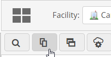
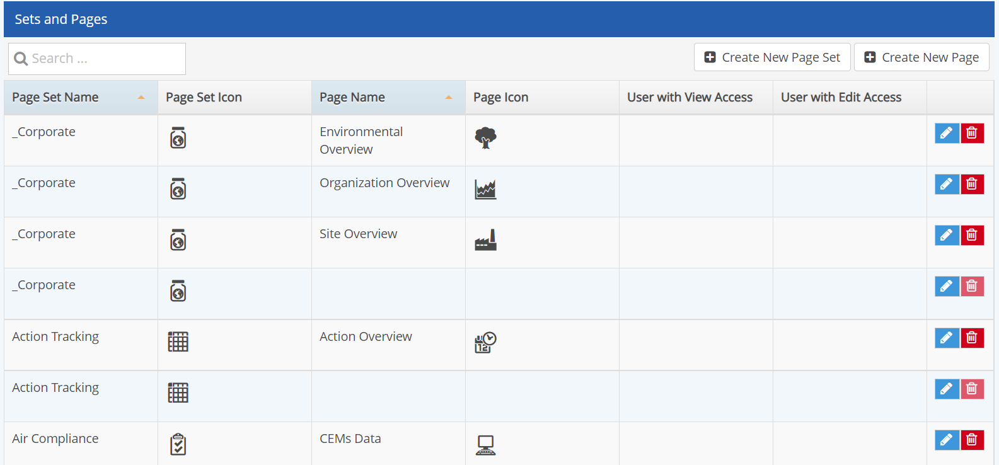
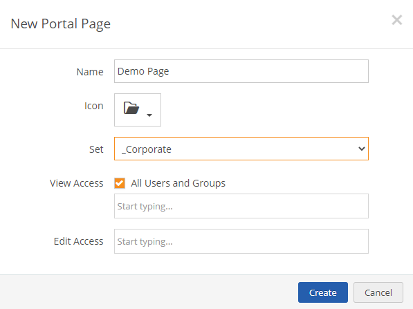

Portal pages are organized into Page Sets. A Page Set is simply a collection of pages. You may create Page Sets to represent different programs, areas, or user group-driven processes for your system. Page Sets and Pages are managed in the Page Library.
Permissions: Users should be either in Administrators group or in the package role Portal Administrator to be able to access Page/Panel libraries.
Generally, a Portal page will contain only one data type, although it is possible to mix data types on a page. For example, a page might include a chart showing data metrics in a meaningful way, along with a Quick Links panels containing links to access reports or other external resources. Mixed data types on a page, such as numeric data with workflows, should not be used for data entry or when users will be working offline with data.
Page Sets and Pages should not reflect the system hierarchy represented in the Management System. Best practice and the supported approach is that Page Sets and Pages represent a logical combination of programs and processes for the set of users who will be accessing them. Familiarity with the system hierarchy should not be necessary and references to it may well be confusing to the intended users. Please see this further Note.
To access the Page Library:
Select the Page Library icon from the page menu.

The Page Sets and Pages are shown in a table.

To create a new Page Set:
Once you have created a Page Set, you can create one or more pages to belong to the set. Pages are created empty of content. The data to be used on the page and the panels (tables and charts) displayed on the page are then added and configured.
To create a new page:
Enter a name for the page and select an optional icon.
Click Create.

The Page Set and Page will be displayed in the page menu.
Next, you can configure each page as needed for the functions required and the users you plan to distribute them to. See Page Configuration.